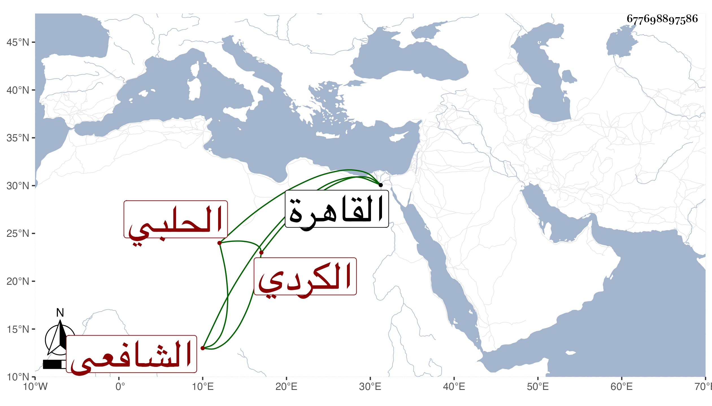

0902Sakhawi.DawLamic.ITO20230111-ara1.EIS1600.677698897586
Biography ID: 677698897586
799
عبد القادر بن يوسف بن يعقوب بن شرف بن حسام بن محمد بن حجي بن محمد بن عمر الكردي الأصل الحلبي الشافعي الآتي أبوه ويعرف بابن الشيخ يوسف الكردي ومات أبوه وهو صغير فنشأ يتعانى بعض الحرف ثم أقبل وهو كبير على الاشتغال في الفقه على عثمان الكردي والنحو على حسن بن السيوفي ، وفضل وصار يدرس ويفتي بل انتزع من شيخه عثمان الكردي القرناصية المتلقي لها عن أبيه ، وحج ودخل القاهرة وأخذ عن الكمال بن أبي شريف وسمع على الخيضري وغيره . ومات في صفر سنة ست وتسعين وثمانمائة ودفن بقبور الصالحين من مقام الخليل إبراهيم عن بضع الأربعين .
